용접기능장 (2010-07-11 기출문제)
1과목: 임의구분
1. 피복 아크 용접에서 아크쏠림 방지대책 중 맞는 것은?
- 교류용접기로 하지 말고 직류용접기로 할 것
- 아크길이를 다소 길게 할 것
- 접지점은 한 개만 연결 할 것
- 용접봉 끝을 아크쏠림 반대방향으로 기울일 것
(정답률: 95%)

2. 초음파 탐상시험에서 음파의 종류에 해당되지 않는 것은?
- 저음파
- 청음파
- 초음파
- 고음파
(정답률: 53%)
3. 가스용접으로 동합금을 용접하는데 적당한 용제(flux)는?
- 붕사
- 황혈염
- 염화나트륨
- 탄산소다
(정답률: 83%)
4. 저압식 절단 토치를 올바르게 설명한 것은?
- 아세틸렌가스의 압력이 보통 0.07kgf/cm2이하에서 사용한다.
- 산소가스의 압력이 보통 0.07kgf/cm2이하에서 사용한다.
- 아세틸렌가스의 압력이 보통 0.07~0.4kgf/cm2정도에서 사용한다.
- 산소가스의 압력이 보통 0.07~0.4kgf/cm2정도에서 사용한다.
(정답률: 75%)
5. 뉴턴(Newton)의 만유인력의 법칙에 따라서 금속원자 간에 인력이 작용하여 결합하게 된다. 이 결합을 이루게 하기 위해서는 원자들은 보통 몇 cm 접근시켰을 때 원자가 결합하는가?
- 10-6
- 10-8
- 10-10
- 10-12
(정답률: 75%)
6. 피복 금속 아크 용접봉의 피복제의 역할이 아닌 것은?
- 용융금속을 대기와 잘 접촉하게 한다.
- 아크를 안정시켜 용접을 용이하게 한다.
- 용착금속의 냉각속도를 지연시킨다.
- 모재표면의 산화물을 제거한다.
(정답률: 84%)
7. 비교적 큰 용적이 단락되지 않고 옮겨가는 형식이며, 서브머지드 아크 용접과 같이 대전류 사용 시에 나타나는 용적이행 형식은?
- 단락형
- 스프레이형
- 글로뷸러형
- 반발형
(정답률: 82%)
8. 가스용접에서 정압 생성열(kcal/m3)이 가장 적은 가스는?
- 아세틸린
- 메탄
- 프로판
- 부탄
(정답률: 64%)
9. 피복 아크 용접품질에 영향을 주는 요소가 아닌 것은?
- 전류조정
- 용접기의 사용률
- 용접속도
- 아크길이
(정답률: 90%)
10. 산소와 아세틸렌 용기 취급 시 주의사항 중 잘못 된 것은?
- 산소병 내에 다른 가스를 혼합하여도 된다.
- 산소병 운반시 충격을 주어서는 안 된다.
- 아세틸렌 병은 세워서 사용하며, 병에 충격을 주어서는 안 된다.
- 산소병은 40℃이하 온도에서 보관하고 직사광선을 피해야 한다.
(정답률: 91%)
11. 1차 코일을 교류 전원에 접속하던 2차 코일은 70~100V의 저전압으로 되고, 2차 코일은 전환 탭으로 권선비에 따라 큰 전류를 조정하는 용접기는?
- 발전형 직류 아크 용접기
- 가동 코일형 교류 아크 용접기
- 가동 철심형 교류 아크 용접기
- 탭 전환형 직류 아크 용접기
(정답률: 42%)
12. AW400인 교류 아크 용접기로 두께가 9mm인 연강판을 용접전류 180A, 아크전압 30V로 접합하고자 할 때 이 용접기의 효율은 약 % 인가? (단, 이 교류 아크 용접기의 내부 손실은 4kW이다.)
- 32.4
- 38.7
- 45.7
- 57.4
(정답률: 41%)
13. 가스토치를 사용하여 용접부의 결함, 뒤따내기, 가접의 제거, 압연강재, 주강의 표면결함의 제거 등에 사용하는 가공법은?
- 가스절단
- 아크에어 가우징
- 가스 가우징
- 가스 스카핑
(정답률: 74%)
14. 가스절단에 쓰이는 예열용 가스로 불꽃의 온도가 가장 높은 것은?
- 수소
- 아세틸렌
- 프로판
- 메탄
(정답률: 77%)
15. 플라즈마 절단에 대한 설명 중 틀린 것은?
- 텅스텐 전극과 모재사이에서 아크 플라즈마를 발생시키는 것을 이행형 아크 절단이라 한다.
- 비이행형 아크절단은 텅스텐전극과 수냉 노즐과의 사이에서 아크를 발생시켜 절단한다.
- 작동가스로는 스테인리스강에 대해서는 헬륨과 산소의 혼합가스를 일반적으로 사용된다.
- 알루미늄 등의 경금속에 대해서는 작동가스로 아르곤과 수소의 혼합가스를 일반적으로 사용된다.
(정답률: 58%)
16. 서브머지드 아크 용접의 장점에 대한 설명으로 틀린 것은?
- 대전류에서 용접할 수 있으므로 고능률적이다.
- 용접입열이 커서 모재에 변형을 가져올 우려가 없으며 열 영향부가 넓다.
- 용접 금속의 품질이 양호하다.
- 유해광선이나 퓸(fume)등이 적게 발생되어 작업 환경이 깨끗하다.
(정답률: 74%)
17. 일렉트로 슬래그 용접의 장점이 아닌 것은?
- 박판 강재의 용접에 적합하다.
- 특벼한 홈 가공을 필요로 하지 않는다.
- 용접시간이 단축되기 때문에 능률적이다.
- 냉각속도가 느리므로 기공, 슬래그 섞임이 없다.
(정답률: 72%)
18. 전류가 인체에 미치는 영향 중 순간적으로 사망할 위험이 있는 전류량은 몇 [mA] 이상인가?
- 8
- 20
- 35
- 50
(정답률: 77%)
19. 염화아연을 사용하여 납땜을 사용하였더니 그 후에 그 부분이 부식되기 시작했다. 그 이유로 가장 적당한 것은?
- 땜납과 금속판이 전기작용을 일으켰기 때문에
- 땜납의 양이 많기 때문에
- 인두의 가열온도가 높기 때문에
- 납땜 후 염화아연을 닦아내지 않았기 때문에
(정답률: 81%)
20. CO2가스 아크 용접에서 사용되는 복합 와이어의 구조가 아닌 것은?
- 아코스 와이어
- Y관상 와이어
- S관상 와이어
- U관상 와이어
(정답률: 53%)
2과목: 임의구분
21. 서브머지드 아크 용접 시 와이어 표면에 구리도금을 하는 이유로 가장 적당하지 않는 것은?
- 콘택트 팁과 전기적 접촉을 원활히 해준다.
- 와이어의 녹 방지를 함으로서 기공발생을 적게 한다.
- 송급 롤러와 접촉을 원활히 해줌으로서 용접속도에 도움이 된다.
- 용착금속의 강도를 저하시키고 기계적 성질도 저하시킨다.
(정답률: 86%)
22. 미그(MIG)용접에서 용융속도의 표시 방법은?
- 모재의 두께
- 분당 보호가스 유출량
- 용접봉의 굵기
- 분당 용융되는 와이어의 길이, 무게
(정답률: 82%)
23. 겹치기 저항 용접에 있어서 접합부에 나타나는 용융 응고된 금속 부분을 무엇이라 하는가?
- 오목 자국
- 너 깃
- 튐
- 오 손
(정답률: 85%)
24. 전기적 에너지를 열원으로 사용하는 용접법에 해당되지 않는 것은?
- 피복 금속 아크 용접
- 플라스마 아크 용접
- 테르밋 용접
- 일렉트로 슬래그 용접
(정답률: 82%)
25. 원자 수소 아크 용접에 이용되는 용접열로 가장 적당한 것은?
- 2000~3000℃
- 3000~4000℃
- 4000~5000℃
- 5000~6000℃
(정답률: 63%)
26. TIG용접 기법 중 용입이 얕고 청정효과가 있는 전극 특성은?
- 직류역극성(DCRP)
- 직류정극성(DCSP)
- 교류역극성(ACRP)
- 교류정극성(ACSP)
(정답률: 69%)
27. KS규격에서 정한 TIG 용접에서 사용되는 2% 토륨텅스텐(YWTh-2)전극봉의 식별용 색으로 맞는 것은?
- 녹색
- 갈색
- 황색
- 적색
(정답률: 68%)
28. 가스용접 및 절단작업 시 안전사항으로 가장 거리가 먼 것은?
- 작업 시 작업복은 깨끗하고 간편한 복장으로 갈아입고 작업자의 눈을 보호하기 위해 보안경을 착용한다.
- 납이나 아연합금 및 도금 재료의 용접이나 절단 시 중독에 우려가 있으므로 환기에 신경을 쓰며 계속 작업보다 주기적인 휴식을 취한 후 작업을 한다.
- 산소병은 고압으로 충전되어 있으므로 운반 및 압력 조정기 체결을 정확히 해야 하며 나사부분의 마모를 적게 하기 위하여 윤활유를 사용한다.
- 밀폐된 용기를 용접하거나 절단할 때 내부의 잔여물질 성분이 팽창하여 폭발할 우려를 충분히 검토 후 작업을 한다.
(정답률: 88%)
29. 탄산가스 아크 용접에서 전진법의 특징이 아닌 것은?
- 용접선이 잘 보이므로 운봉을 정확하게 할 수 있다.
- 비드 높이가 낮고 평탄한 비드가 형성된다.
- 스패터가 비교적 많으며 진행 방향쪽으로 흩어진다.
- 비드 형상이 잘 보이기 때문에 비드폭, 높이 등을 억제하기 쉽다.
(정답률: 63%)
30. 일반적인 합금의 특징 설명으로 틀린 것은?
- 경도가 높아진다.
- 전기 전도율이 저하된다.
- 용융 온도가 높아진다.
- 열전도율이 저하된다.
(정답률: 47%)
31. Ni40~50%와 Fe의 합금으로 열팽창계수가 5~9×10-6정도이며 전구의 도입선으로 사용되는 불변강은?
- 인바
- 플라티나이트
- 코엘린바
- 슈퍼인바
(정답률: 50%)
32. 이산화탄소 아크 용접법은 어느 금속에 가장 적합한가?
- 알루미늄
- 마그네슘
- 저탄소강
- 몰리브덴
(정답률: 78%)
33. 칼슘이나 규소를 첨가해서 혹연화를 촉진시켜 미세흑연을 균일하게 분포시키거나 백주철을 열처리하여 연신율을 향상시킨 주철은?
- 반주철
- 가단주철
- 구상흑연주철
- 회주철
(정답률: 73%)
34. 내열용 알루미늄 합금의 종류가 아닌 것은?
- Y합금
- 로우엑스
- 코비탈륨
- 라우탈
(정답률: 45%)
35. 니켈-구리계 합금의 종류가 아닌 것은?
- 어드밴스(advance)
- 큐프로 니켈9cupro nickel)
- 퍼어멀로이(permalloy)
- 콘슨탄탄(constantan)
(정답률: 54%)
36. Ni-Cr계 합금의 특징 설명으로 틀린 것은?
- 전기저항이 크다.
- 내열성이 크고 고온에서 경도 및 강도 저하가 적다.
- 내식성이 작고 산화도가 크다.
- Fe 및 Cu에 대한 전열효과가 크다.
(정답률: 61%)
37. 주철의 용접은 보수용접에 많이 쓰이며 주물의 상태, 결함의 위치, 크기, 겉모양 등에 유의하여야 한다. 주철의 보수용접 종류가 아닌 것은?
- 스터드법
- 빌드업법
- 비너장법
- 버터링법
(정답률: 55%)
38. 철강 표면에 Zn을 확산 침투시키는 방법으로 청분이라고 하는 300mesh 정도의 Zn분말 속에 제품을 넣고, 300~420℃로 1~5시간 가열하여 경화층을 얻는 금속침투법은?
- 칼로라이징(calorizing)
- 세라다이징(sheradizing)
- 크로마이징(chromizing)
- 실리코나이징(siliconizing)
(정답률: 71%)
39. 페라이트계 스테인리스강에 대한 설명으로 틀린 것은?
- 표면이 잘 연마된 것은 공기나 물중에서 부식되지 않는다.
- Cr 12~17%, C 0.2% 이하 함유된 스테인리스강이다.
- 유기산, 질산, 염산, 황산 등에 잘 침식된다.
- 오스테나이트계에 비하여 내산성이 낮다.
(정답률: 50%)
40. 구리 및 구리합금의 용접에서 판두께 6mm 이하에서 많이 사용되며, 용접부의 기계적 성질이 우수하여 가장 널리 쓰이는 용접법은?
- 불활성가스 텅스텐 아크 용접
- 테르밋 용접
- 일렉트로 슬래그 용접
- CO2아크 용접
(정답률: 77%)
3과목: 임의구분
41. 듀콜(ducol)강은 어디에 속하는 강종인가?
- 고망간강 중 시멘타이트 조직을 나타낸다.
- 저망간강 중 퍼얼라이트 조직을 나타낸다.
- 고망간강 중 오스테나이트 조직을 나타낸다.
- 저망간강 중 페라이트 조직을 나타낸다.
(정답률: 39%)
42. 잔류 오스테나이트를 마르텐사이트화 하기 위한 처리를 무엇이라고 하는가?
- 심랭처리
- 용체화 처리
- 균질화 처리
- 불루잉 처리
(정답률: 80%)
43. 잔류응력이 존재하는 구조물에 인장이나 압축하중을 걸어 용접부를 약간 소성변형 시킨 후 하중을 제거하면 잔류 응력이 감소하는 현상을 이용하는 잔류응력 완화법은?
- 기계적 응력 완화법
- 저온 응력 완화법
- 피닝법
- 응력제거 풀림법
(정답률: 63%)
44. 용접을 진행하면서 용접부 부근을 냉각시켜 모재의 열 영향부의 범위를 축소시킴으로써 변형을 방지하는데 사용하는 냉각법에 속하지 않는 것은?
- 수냉동판 사용법
- 살수법
- 피닝법
- 석면포 사용법
(정답률: 70%)
45. 모재에 라미네이션이 발생하였다. 이 결함을 찾는데 가장 좋은 비파괴검사 방법은?
- 육안시험
- 자분탐상시험
- 음향검사시험
- 초음파탐상시험
(정답률: 62%)
46. 아크 용접부 파단면에 생기는 것으로 용접부의 냉각속도가 너무 빠르고 모재의 탄소, 탈산생성물 등이 너무 많을 때의 원인으로 생성되는 결함은?
- 언더필
- 스패터링
- 아크 스트라이크
- 선상조직
(정답률: 81%)
47. 용접기본 기호 중 표면육성 기호로 맞는 것은?
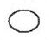
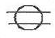
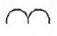
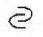
(정답률: 76%)
48. 제어의 형태에 따라 산업용 로봇을 분류할 때 해당 되지 않는 것은?
- 서보제어 로봇
- 논 서보제어 로봇
- 원통좌표 로봇
- CP제어 로봇
(정답률: 69%)
49. 다음 중 용착법에 대해 잘못 표현된 것은?
- 덧살올림법 : 각 층마다 전체의 길이를 용접하면서 쌓아올리는 방법
- 대칭법 : 용접부의 중앙으로부터 양끝을 향해 대칭적으로 용접해 나가는 방법
- 비석법 : 용접 길이를 짧게 나누어 간격을 두면서 용접하는 방법
- 전진블록법 : 한 끝에서 다른 쪽 끝을 향해 연속적으로 진행하면서 용접하는 방법
(정답률: 54%)
50. 용접재료시험법 중에서 인장시험 파단후의 시험편 단면적을 A(mm2), 최초의 단면적을 A0(mm2)라 할 때 단면수축을 ø를 구하는 식은?
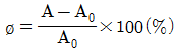
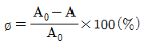
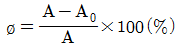
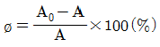
(정답률: 56%)
51. 용접지그를 선택하는 기준으로 틀린 것은?
- 용접하고자 하는 물체를 튼튼하게 고정시켜 줄 수 있는 크기와 강성이 있어야 한다.
- 용접변형을 억제할 수 있는 구조이어야 한다.
- 피용접물과의 고정과 분해가 어렵고 용접할 간극을 적당하게 받쳐 주어야 한다.
- 청소하기 쉽고 작업능률이 향상되어야 한다.
(정답률: 86%)
52. 보통 판 두께가 4~19mm 이하의 경우를 한쪽에서 용접으로 완전용입을 얻고자할 때 사용하며 홈 가공이 비교적 쉬우나 판의 두께가 두꺼워지면 용착 금속의 양이 증가하는 맞대기 이음 형상은?
- V형 홈
- H형 홈
- J형 홈
- X형 홈
(정답률: 74%)
53. 어떤 부재의 용접시공 시 용착금속의 중량을 Wd(g), 용착속도를 V(g/hr), 용접공의 실동효율(=아크타임)을 Te(%)라 할 때 용접 작업시간(총 용접시간) Ta(hr)의 계산식은?
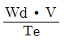
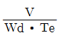
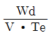
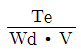
(정답률: 40%)
54. 피복 아크 용접에서 아크길이가 너무 길거나 용접전류가 지나치게 높을 때 발생되는 용접 결함으로 가장 적당한 것은?
- 슬래그혼입
- 언더컷
- 선상조직
- 오버랩
(정답률: 79%)
55. 관리도에서 점이 관리한계 내에 있으나 중심선 한쪽에 연속해서 나타나는 점의 배열현상을 무엇이라 하는가?
- 연
- 경향
- 산포
- 주기
(정답률: 43%)
56. 로트의 크기 30. 부적합품률이 10%인 로트에서 시료의 크기를 5로 하여 랜덤 샘플링할 때, 시료 중 부적합 품수가 1개 이상일 확률은 약 얼마인가? (단, 초기하분포를 이용하여 계산한다.)
- 0.3695
- 0.4335
- 0.5665
- 0.63⑤
(정답률: 36%)
57. 다음 중 브레인스토밍(Brainstorming)과 가장 관계가 깊은 것은?
- 파레토도
- 히스토그램
- 회귀분석
- 특성요인도
(정답률: 67%)
58. 작업개선을 위한 공정분석에 포함되지 않는 것은?
- 제품 공정분석
- 사무 공정분석
- 직장 공정분석
- 작업자 공정분석
(정답률: 50%)
59. 로트의 크기가 시료의 크기에 비해 10배 이상 클 때, 시료의 크기와 합격판정개수를 일정하게 하고 로트의 크기를 증가시키면 검사특성곡선의 모양 변화에 대한 설명으로 가장 적절한 것은?
- 무한대로 커진다.
- 거의 변화하지 않는다.
- 검사특성곡선의 기울기가 완만해진다.
- 검사특성곡선의 기울기 경사가 급해진다.
(정답률: 60%)
60. 과거의 자료를 수리적으로 분석하여 일정한 경향을 도출한 후 가까운 장래의 매출액, 생산량 등을 예측하는 방법을 무엇이라 하는가?
- 델파이법
- 전문가패널법
- 시장조사법
- 시계열분석법
(정답률: 46%)